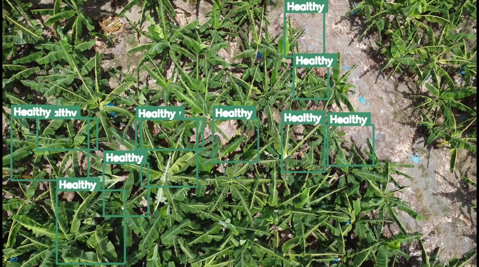

The field console
A browser recreation of the PyQt5 dashboard the operator uses in the field. Press Start to run detection over a real captured frame, then Capture to export a field report bundle.

● IDLE
scrcpy · 640×480
Stopped
Detection Summary
Total detections0
Healthy0
Stressed0
Diseased0
Vegetation Health
good
ExG proxy
mean stress 0.29high-stress 26%
Geo Tag (GPS)
Latitude7.45
Longitude125.78
Sourcewindows_gps
Field Map (Leaflet)
Markers colored by health category · Compostela, Davao de Oro
Activity Log
Last Field Report
Press Capture Frame during a live session to generate a report bundle (JPG + JSON + CSV + Leaflet map).
Session telemetry